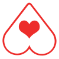

This site is
by
Lemon
With help from
Sanguinary Novel
and
Boots Raingear
Thoughts?
Let us know
By the way, you should
add to home screen
pin to start
add to shelf
add to desktop
bookmark this
Tap the
icon up there
Then choose
Add to Home Screen
Tap the
icon below.
Then choose
Add To Home Screen
Tap the
icon.
Tap the
up there.
Then choose
More tools
and
Add to desktop
Then choose
More tools
and
Add to shelf
Tap the
icon.
Then
Add Bookmark
.
Tap the
icon up here
Then choose
Pin this page to start.
Tap the
icon in the address bar.
Tap the
icon up there
Tap the bookmark icon up there.
Okay, did that.
You are offline
You're not currently connected to the internet.
Figure out what's wrong with your connection and refresh.

{{tipLabel}} {{tipNumberFormatted}}
Learn more at
greatsex.tips
Download this image and share it with whoever needs to have their sex lives improved.
Hang on...
Switch Background
Close